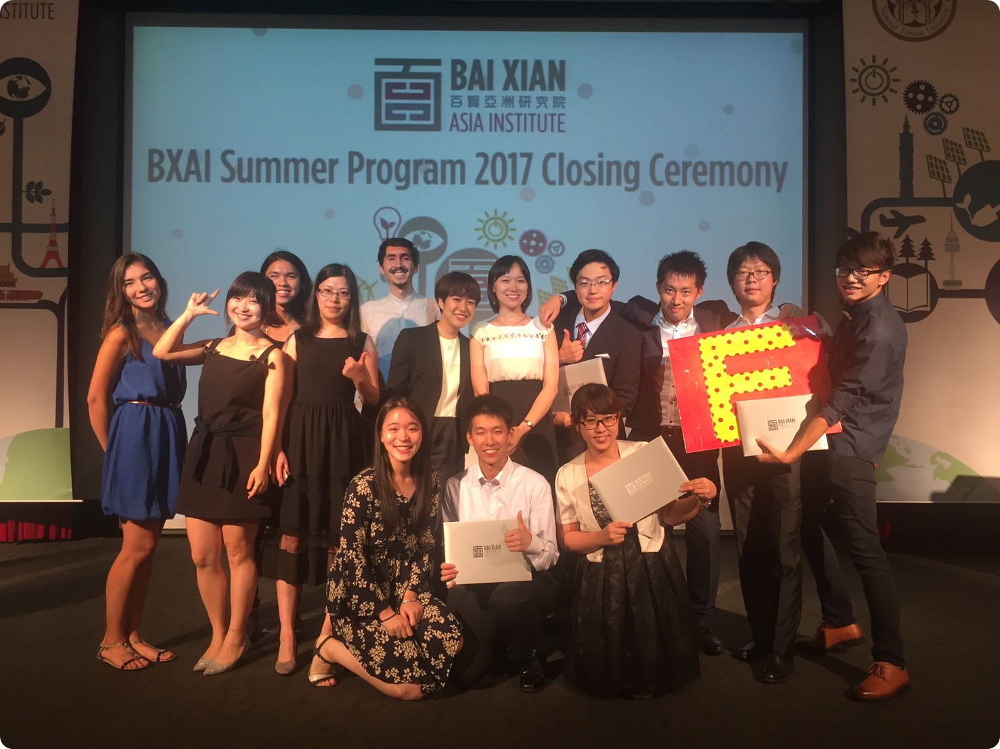
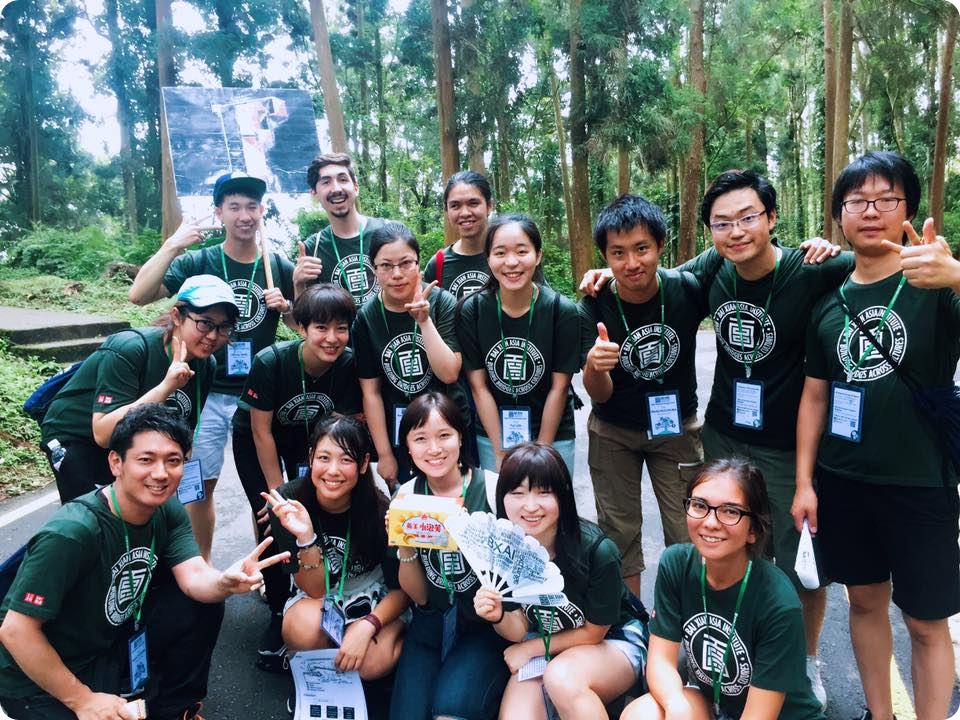
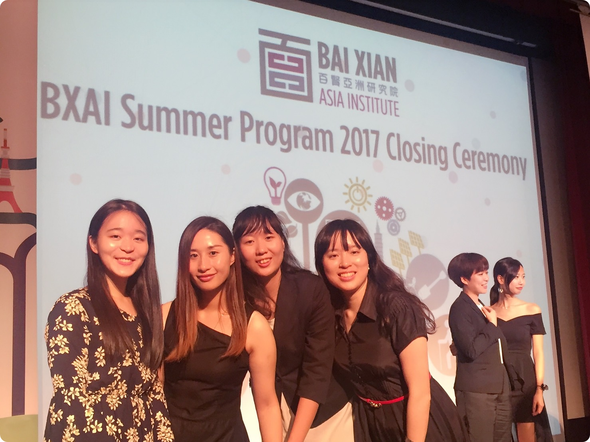

Yun is a
UX Researcher
Data Analyst
Data Scientist
Story Teller
☘Service
Personal Tutor for Bethany Children's Home
The children in children's homes usually lack academic resources as well as the privilege to maintain a study habit. I was a volunteer to weekly tutor one child for two years. I considered myself not only as a volunteer but also as a navigator by making a step forward towards social equity.
2017 Scholar of Bai Xian Asia Institute
BXAI’s vision is to become Asia’s preeminent educational platform that paves the way towards a prosperous, sustainable, and conflict-free modern Asia. By building bridges across cultures, BXAI seeks to develop a new generation of leaders through scholarship and education programs that create opportunities for intercultural exchange and learning.

2017 BaiXian Closing Ceremony

BaiXian Scholar Trip to XiTou

BaiXian Girl Power